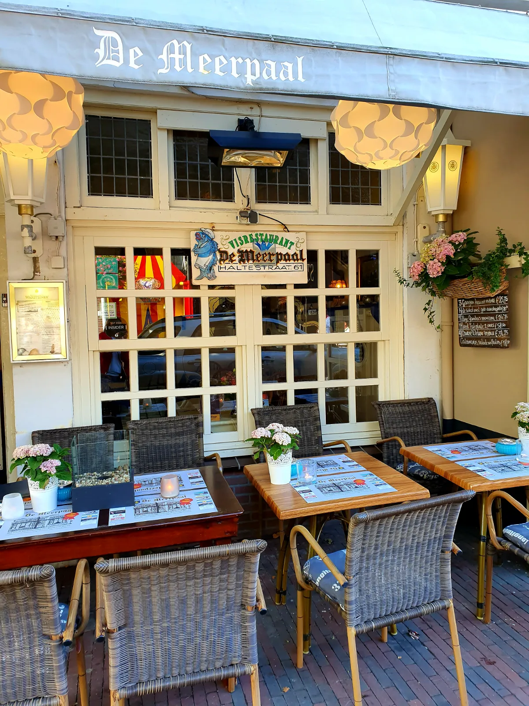
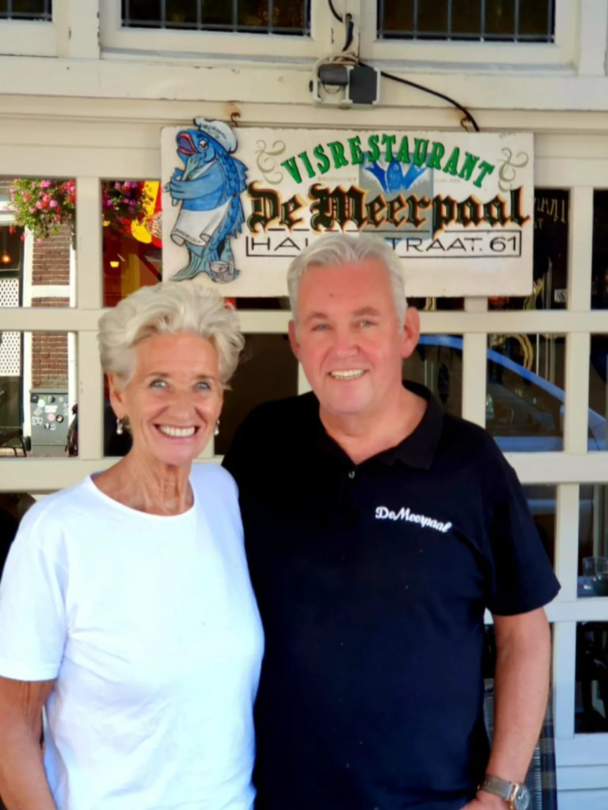
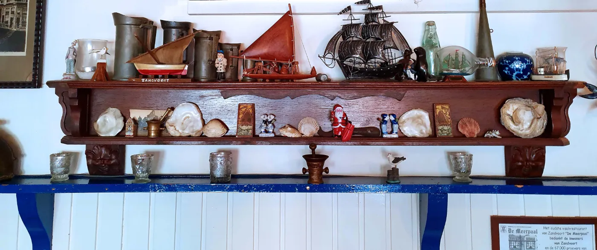
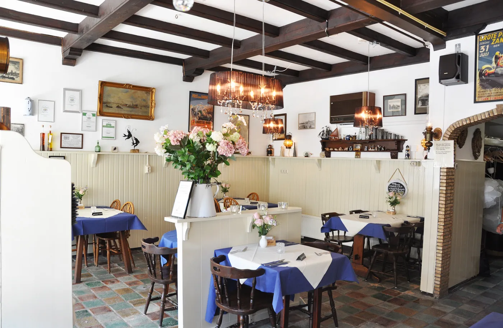
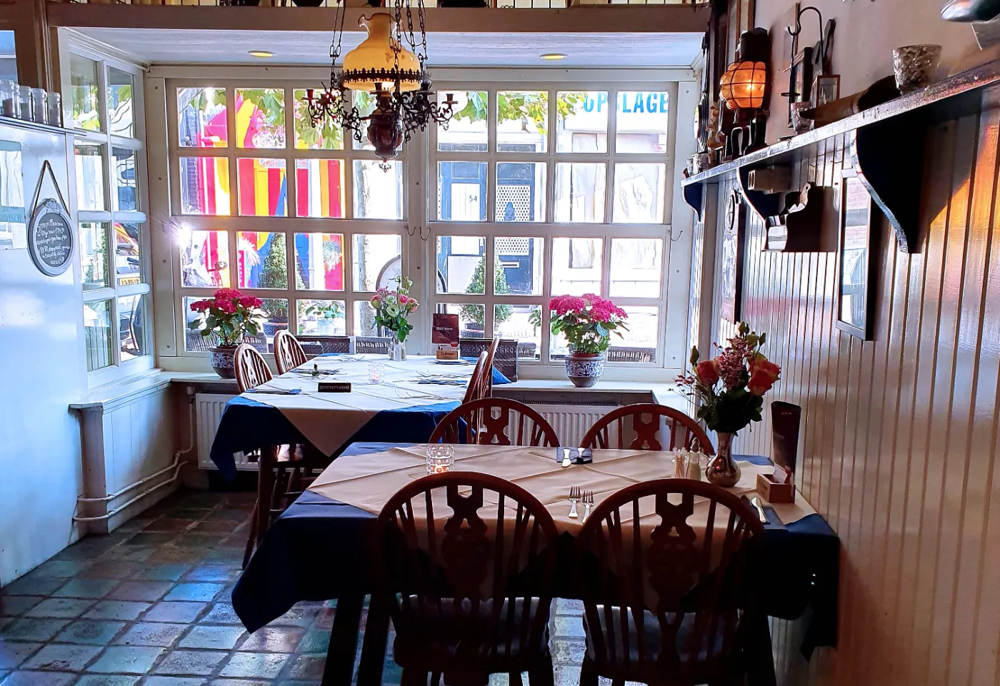

Oud Zandvoortsch Vischrestaurant
De Meerpaal
Het oudste visrestaurant van Zandvoort. Dagelijks verse vis, bereid op de traditionele manier: eerlijk, ouderwets lekker en zonder pretenties.

“Zoals mijn oma het altijd maakte”
Dat hoort u vaak aan tafel bij De Meerpaal. Hier eet u vis zoals vis hoort te zijn: eerlijk, vers en voor een goede prijs.
Chef-kokkin en eigenaresse Lenie Koper-Pot kookt vanuit passie en liefde voor het vak, en laat u het liefst proeven wat ze zelf het lekkerst vindt. Stoof- en bakpaling, verse schol, hagelwitte kabeljauw uit de pan of gepocheerd met mosterdsaus, en zeetongen van 500 gram, gefileerd of in zijn geheel.
Gastheer Floor Koper ontvangt u en adviseert u graag bij uw wijnkeuze. Samen heten ze u welkom in De Meerpaal, een begrip in Zandvoort als het gaat om heerlijk ouderwets vis eten.
Lekker eten is tijd vergeten.
Proef de zee op uw bord
Al onze gerechten worden geserveerd met salade, groente van de dag en de keuze uit frites, gebakken aardappels of puree.
Hoofdgerechten vis
- Slibtongetjes, 2 stuksin boter gebakken
- Slibtongetjes, 3 stuksin boter gebakken
- Calamaresmet huisgemaakte knoflooksaus
- Zalm van de grill
- Kabeljauw, naturel gebakkenmet verse remouladesaus
- Kabeljauw op bedje spinaziemet room en kaas uit de oven
- Scholfilet, naturel gebakken
- Hele schol
- Scholfilet Reykjavikmet garnalen, champignons & ui
- Zeewolf filetnaturel gebakken en gegaard in de oven
- Zeewolf, gebakkenmet masala kerriesaus & garnalen
- Tongfilet Reykjavikmet garnalen, champignons, ui & kruiden
- Tongfiletin boter gebakken
Noordzee banket voor 2 personen
Mixed plate van scholfilet, tongfilet, kabeljauw, slibtong en calamares, geserveerd met salade, verse groente, verse remouladesaus, huisgemaakte dressing, gebakken aardappels en Hollandse frites.
Voorgerechten
- Hollandse garnalencocktailmet verse cocktailsaus
- Hollandse haringmet gesnipperde ui en augurk
- Tonijn carpacciomet toast en boter
- Gerookte zalmmet toast en boter
- Gerookte palingde enige echte
- Parfait de Lenietapas van gerookte zalm, gerookte paling & Zandvoortse garnalen en ons beroemde garnalenkroketje, toast & boter
- Garnalenkroketjesdrie heerlijke kroketjes
- ½ dozijn slakkenin knoflook en wijn
- Brie uit de ovenmet honing en macadamia
- Zandvoortsche vissoephuisgemaakte vissoep
- Kreeftensoepafgeblust met cognac
- Tomatensoepzoals grootmoeder het maakte
Voor bij de borrel
- Mandje stokbroodmet kruidenboter, tapenade en olijfolie
- Bittergarnituur12 heerlijke hapjes
Hoofdgerechten vlees
- Biefstukmedium of rood gebakken
- Biefstuk Stroganoffmet heerlijke saus
- Biefstuk pepersaus of champignonsaus
- Zigeunerschnitzelmet heerlijke saus
- Wienerschnitzel
- Entrecotemet kruidenboter
Vegetarische gerechten
- Kaasschnitzeluit de oven
- Wienerschnitzel vegetarisch
- Schnitzel vegetarischmet heerlijke saus
Nagerechten
- IJssurprisechef’s dagkeuze
Koffie met likeur naar keuze
- Irish koffiemet whiskey & verse slagroom
- Caribbean koffiemet Tia Maria & verse slagroom
- Kiss of Firemet Tia Maria & Cointreau
- Koffie à la Meerpaalmet Tia Maria & Crème de Cacao
- Dom koffiemet Bénédictine & verse slagroom
Eet gezond, eet vis.
Binnen aan tafel of buiten op het terras
Sfeervol dineren kan in ons gezellige restaurant, met de blauwe tafelkleden en de schappen vol oude zeemansspullen, en bij mooi weer op het terras aan de Haltestraat. Bij De Meerpaal is het altijd genieten van een goede ambiance.



Duik in de zee van smaken
Reserveer een tafel voor een heerlijk avondje uit. Bellen kan altijd, of laat hier uw gegevens achter.
Bel 023-571 2171Wilt u een reservering wijzigen of annuleren? Bel of mail ons even via info@restaurantdemeerpaal.nl.
Openingstijden & adres
Donderdag t/m zondag
17.00 – 22.00 uur
Haltestraat 61
2042 LL Zandvoort
023-571 2171
info@restaurantdemeerpaal.nl
Voor de deur betaald parkeren mogelijk.
Plan uw route